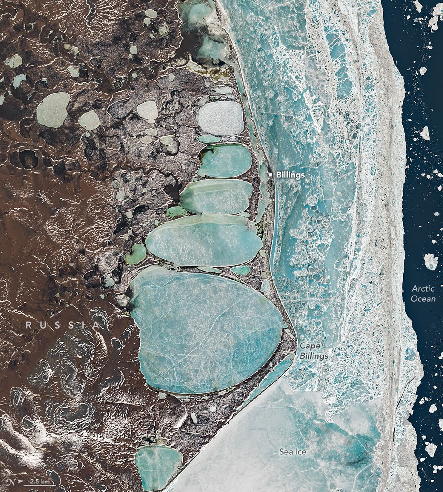

A Siberian snowman in Billings
Icons of winter are sometimes found in unexpected places. In one striking example, a series of oval lagoons in a remote part of Siberia forms the shape of a towering snowman when viewed from above.This image, centered on the remote village of Billings and nearby Cape Billings on Russia’s Chukchi Peninsula, was captured by the Operational Land Imager (OLI) aboard Landsat 8 on June 16, 2025. Established in the 1930s as a port and supply point for the Soviet Union, the village sits on a narrow sandspit that separates the Arctic Ocean from a series of connected coastal inshore lagoons.
The elongated, oval lagoons are frozen over and flanked by sea ice. Though June is one of the warmest months in Billings, ice cover is routine even then. Mean daily minimum temperatures are just −0.6°C (30.9°F) in June, according to meteorological data.
Though the shape may seem engineered, it is entirely natural and the product of geological processes common in the far north. The ground in this part of Siberia is frozen most of the year and pockmarked with spear-shaped ice wedges buried beneath the surface. Summer melting causes overlying soil to slump, leaving shallow depressions that fill with meltwater and form thermokarst lakes. Over time, consistent winds and waves likely aligned and elongated the lakes into the shapes seen in the image. The thin ridges separating the lakes may represent the edges of different ice wedges below the surface.
The first reference to humans building snowmen dates back to the Middle Ages, according to the book The History of the Snowman. While three spherical segments are the most common form, other variants dominate in certain regions. In Japan, snowmen typically have just two segments and are rarely given arms. This five-segmented, snowman-shaped series of lakes spans about 22 kilometers (14 miles) from top to bottom—roughly 600 times longer than the snowwoman that held the Guinness record for the world’s tallest snowperson in 2025.
Snowmen are not the only winter icons tied to this remote landscape. For early expeditions to the Russian Arctic, reindeer offered one of the most reliable modes of transportation. This includes expeditions led by the town’s namesake, Commodore Joseph Billings, a British-born naval officer who enlisted in the Russian navy and led a surveying expedition to find a Northeast Passage between 1790 and 1794.
Although the hundred-plus members of the expedition did not reach Cape Billings, they explored much of the Chukchi Peninsula, producing some of the first accurate maps and confirming that Asia and North America were separated by a strait. In winter, when ships were trapped by ice, explorers moved to land camps and surveyed the region using reindeer-drawn wooden sleds. Frozen rivers and lakes provided solid travel routes compared to the muddy bogs of summer.
Indigenous Chukchi people living on the peninsula routinely used reindeer to haul both people and cargo. A pair of reindeer can comfortably haul hundreds of pounds for several hours a day. In addition to their endurance in cold temperatures, reindeer largely feed themselves by digging through snow to graze on lichens, something neither sled dogs nor horses can do.
Historical records indicate that the Billings expedition enlisted Chukchi people to manage and care for the reindeer, with some accounts suggesting dozens were used at a time. While reindeer primarily hauled sleds, Chukchi people likely rode them as well.
Non-Chukchi members of the expedition reportedly experimented with riding reindeer, though not always successfully. Billings’ secretary and translator, Martin Sauer, described using a saddle without stirrups or a bridle and falling “nearly 20 times” after three hours of travel. He added that the saddle “at first, causes astonishing pain to the thighs.”